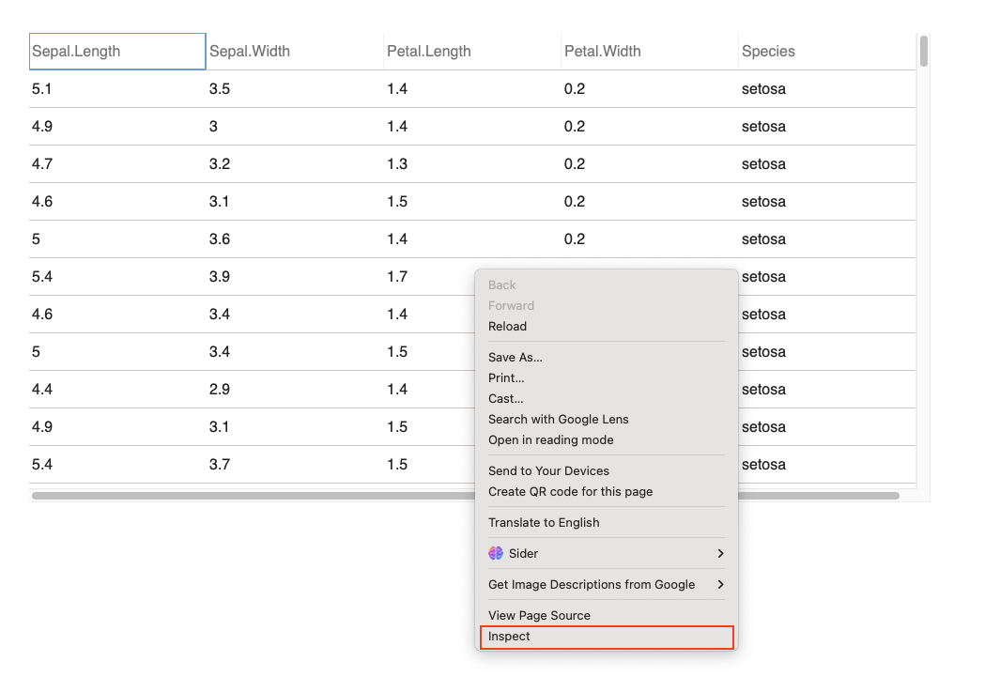
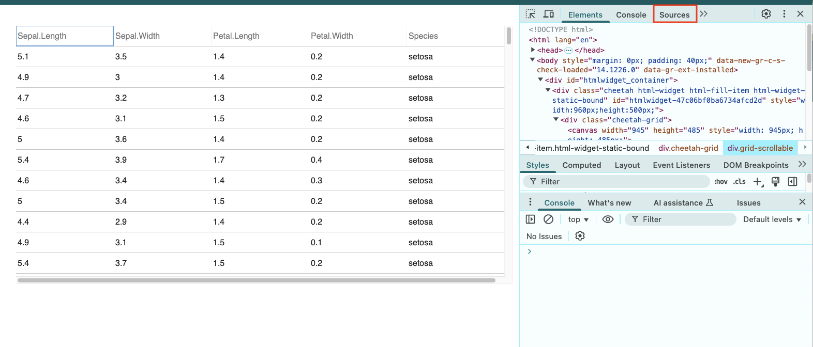
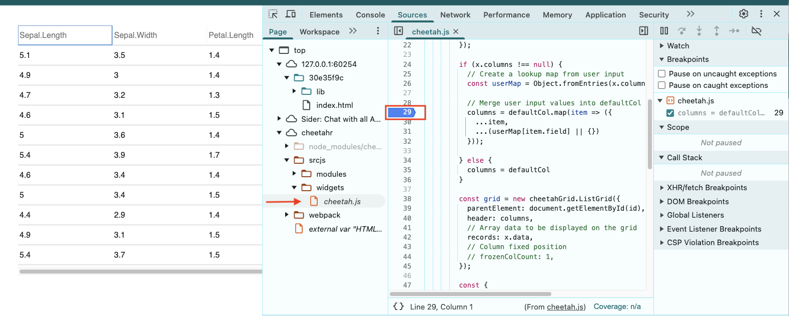

cheetahR is an R package that brings the power of Cheetah Grid to R. Designed for speed and efficiency, cheetahR will allow you to render millions of rows in just a few milliseconds, making it an excellent alternative to reactable and other R table widgets. The goal of cheetahR is to wrap the JavaScript functions of Cheetah Grid and make them readily available for R users, providing a seamless and high-performance table widget for R applications.
Features
- Ultra-fast rendering of large datasets.
- Lightweight and efficient memory usage.
- Customizable styling and formatting.
- Smooth scrolling and interaction.
- Seamless integration with R and Shiny.
Getting Started
So far, cheetah() is available to render a dataframe in R
library(cheetahR)
# Render table
cheetah(iris)
# Change some feature of some columns in the data
cheetah(
iris,
columns = list(
Sepal.Length = column_def(name = "Sepal_Length"),
Sepal.Width = column_def(name = "Sepal_Width", width = 100)
)
)API Integration
cheetahR is compatible with Shiny, allowing for dynamic and interactive tables in web applications. Although still a work in progress.
Contributing
We welcome contributions! If you’d like to help improve cheetahR, feel free to submit issues, feature requests, or pull requests.
Software Pre-requiste
To contribute to this project, some software installations are required, such as npm, node, and packer. Please follow the slides attached to help you get started pre-requisites. Click here to install packer.
When you are in the project, do the following:
packer::npm_install()
# Change the code and then rebundle
packer::bundle("development") # For developement mode
packer::bundle() # For production. Defaut!You may as well bundle for dev using packer::bundle_dev() when in developer mode and when ready for production use packer::bundle_prod(). You may also consider watch() which watches for changes in the srcjs and rebuilds if necessary, equivalent to npm run watch.
Debugging steps
- Once you run a function, for instance,
cheetah(iris), open the viewer on a web browser window (preferably Chrome as it is used to illustrate the action in this step). Note! Other browser pages may differ. - Right-click on the widget and navigate to the “inspect” option on the drop-down menu 
- At the top, where the tabs are displayed, navigate to the “Sources” tab. Open from the sidepanel “cheetahr/srcjs/widgets/cheetah.js” script 
- Once the “cheetah.js” is opened on the main panel. You can set a breakpoint on any line number of the script and reload the page. 
Acknowledgments
This package is built on top of the amazing Cheetah Grid JavaScript library.